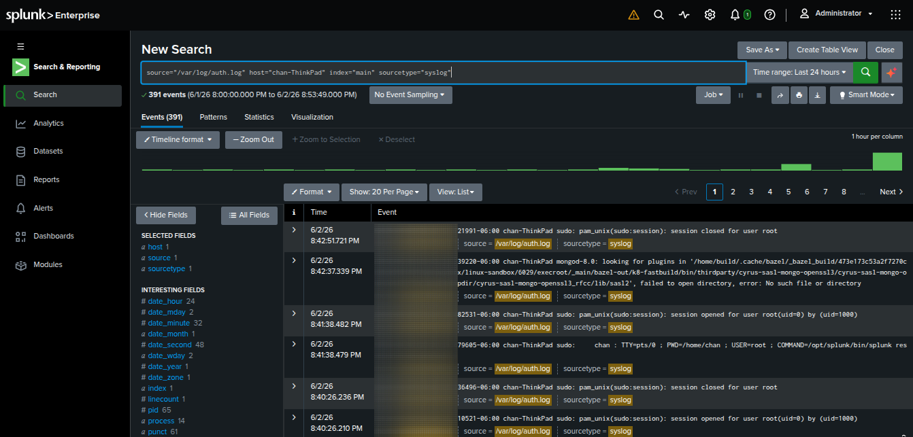
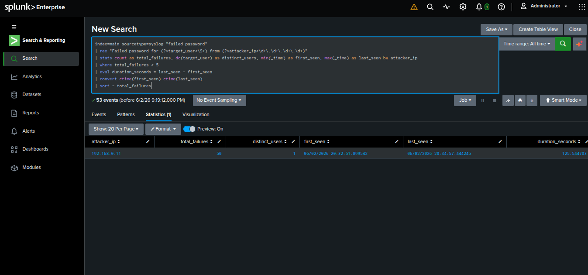
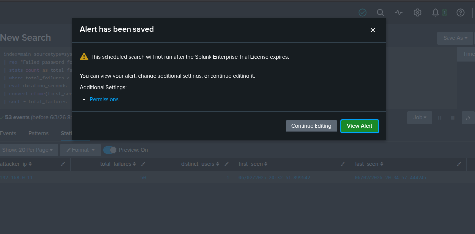

Analyzing Linux auth logs, building high-fidelity SPL queries, and configuring real-time security alerts in Splunk.
To detect identity-based attacks, we target Linux secure or auth.log files. We start by filtering out successful authentications to isolate failed attempts that typically signify a scanning or brute-force pattern.
index=linux_logs sourcetype=syslog "failed password"

A single failed login is usually just a typo. However, multiple failures followed by a fast connection pattern from the same IP points to a brute-force attack. To catch this, we can use Splunk to build a query that groups logs into data.
(Regex) to manually extract the target username
(target_user) and the source IP address
(attacker_ip) from the raw log message.(dc), and stamp the exact microsecond the attack started (min) and ended (max).index=main sourcetype=syslog "failed password" | rex "Failed password for (?\S+) from (? \d+\.\d+\.\d+\.\d+)" | stats count as total_failures, dc(target_user) as distinct_users, min(_time) as first_seen, max(_time) as last_seen by attacker_ip | where total_failures > 5 | eval duration_seconds = last_seen - first_seen | convert ctime(first_seen) ctime(last_seen) | sort - total_failures

Once the detection logic is verified, it must be automated to trigger an alert for Tier 1 SOC analysts whenever the threshold is breached.
| Alert Parameter | Value / Configuration |
|---|---|
| Alert Title | SSH Attack Alert 1: Multiple SSH Login Failures Detected |
| Alert Type | Scheduled (Runs every week) |
| Trigger Condition | Number of Results > 0 |
| Throttling | Suppress alerts from the same src_ip for 1 hour |

To align with industry standards, this detection is mapped directly to the cyber adversary framework, providing actionable context within the incident response pipeline.
src_ip, cross-reference it with Threat Intelligence feeds (e.g., VirusTotal/AlienVault), and dynamically apply an IP block rule on the edge firewall if the activity is un-orchestrated.To implement this detection logic, the following official Splunk documentation and resources were utilized for engineering the SPL query and understanding core log analytics architecture:
count) and tracking unique targeted accounts using Distinct Count (dc).
attacker_ip and target_user from raw syslog streams.
last_seen - first_seen) to accurately measure threat velocity in seconds.
|).
rex)When automated field extraction is not available for custom syslog formats, security analysts implement inline Regular Expressions (Regex) using the rex command to parse security events in real-time. Here is the technical breakdown of the extraction pattern utilized in this lab:
| Regex Token | Technical Purpose & Behavior |
|---|---|
Failed password for |
Literal string anchor. Instructs the engine to locate the exact starting point of a failed authentication event. |
(?<target_user>\S+) |
Creates a dynamic field named target_user. The \S+ token matches one or more non-whitespace characters, efficiently isolating the targeted username (e.g., root, admin) until the next space. |
from |
Literal string anchor used to transition between the compromised username data and network network layer telemetry. |
(?<attacker_ip>\d+\.\d+\.\d+\.\d+) |
Creates a dynamic field named attacker_ip. The \d+ token matches numeric digits, while \. escapes the literal dot character. This strictly matches standard IPv4 structures (e.g., 192.168.0.11). |